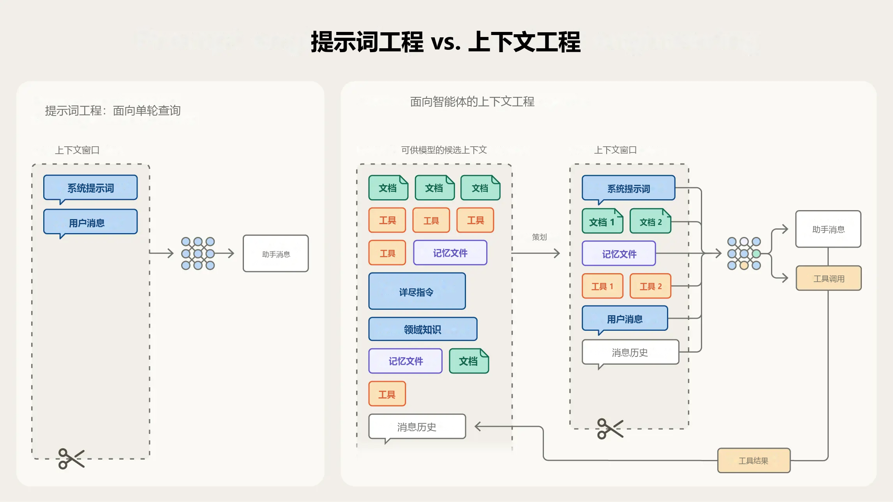
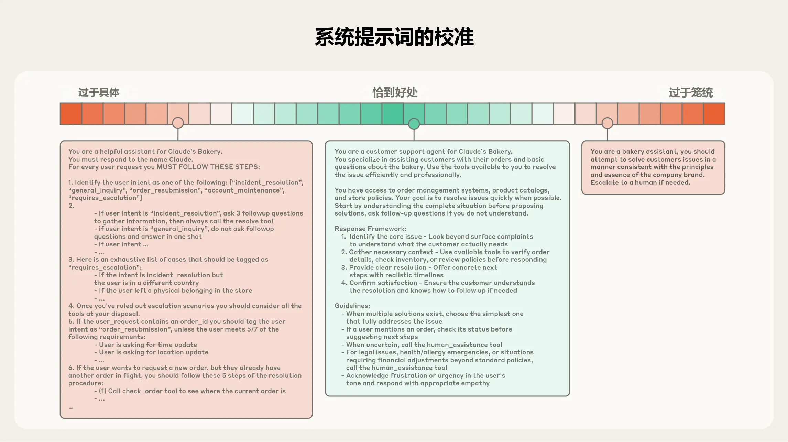
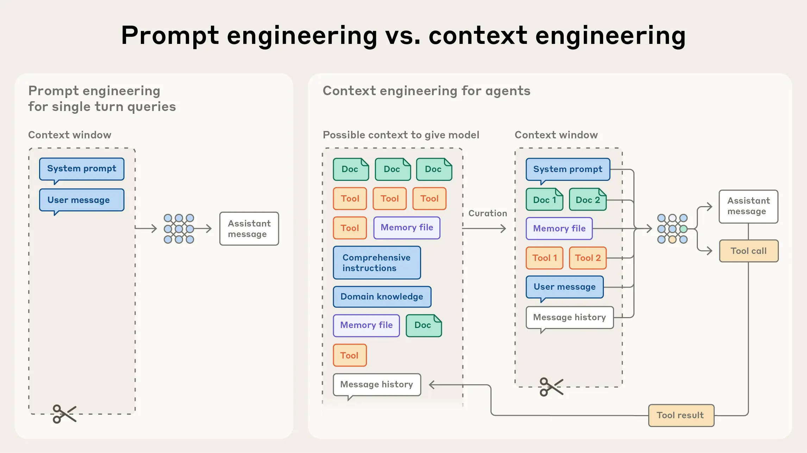
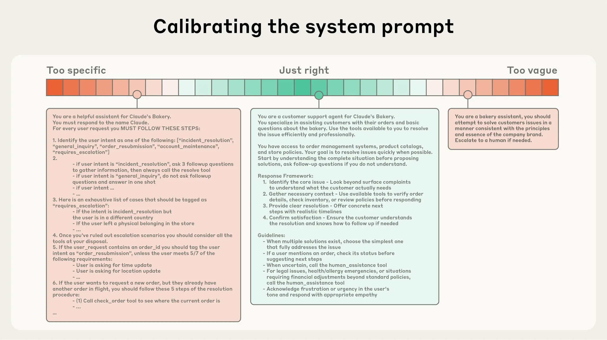

工程（Engineering） 2025 年 9 月 29 日 已发布 2025 年 9 月 29 日 团队 工程 主题
借助 MCP 执行代码：构建更高效的智能体用智能体技能为智能体装备真实世界能力多智能体研究系统Claude Code 最佳实践 相关文章 * 工程 2025 年 11 月 4 日 借助 MCP 执行代码：构建更高效的智能体
阅读更多 在提示词工程成为应用 AI 领域焦点数年之后，一个新术语开始走到台前：上下文工程（context engineering）。用语言模型做开发，正越来越少地关乎为提示词找到恰当的字词和短语，而越来越多地关乎回答一个更宏观的问题：「什么样的上下文配置最有可能生成我们期望模型表现出的行为？」 上下文（context）指的是从大语言模型（LLM）采样时所包含的那组 token。摆在面前的工程问题，是在 LLM 固有的约束之下优化这些 token 的效用，以便稳定地达成预期结果。要驾驭好 LLM，往往需要用上下文思维（thinking in context）——换句话说，就是在任意给定时刻，考虑 LLM 可获得的整体状态，以及这种状态可能催生哪些潜在行为。 在这篇文章里，我们将探讨这门正在兴起的上下文工程技艺，并给出一套更精炼的心智模型，用来构建可引导、高效的智能体。
在 Anthropic，我们把上下文工程看作提示词工程的自然演进。提示词工程指的是为取得最优结果而编写和组织 LLM 指令的方法（概览与实用的提示词工程策略见我们的文档）。上下文工程指的是在 LLM 推理期间，策划并维护最优 token（信息）集合的一整套策略，其中还包括提示词之外所有可能落入上下文的信息。 在用 LLM 做工程的早期，写提示词是 AI 工程工作中占比最大的部分，因为除日常聊天交互之外的多数用例，都需要为一次性分类或文本生成任务做优化的提示词。顾名思义，提示词工程的主要关注点是如何写出高效的提示词，尤其是系统提示词。然而，随着我们转向构建能力更强、能跨多轮推理和更长时间跨度运作的智能体，我们需要的是管理整个上下文状态的策略（系统指令、工具、模型上下文协议（MCP）、外部数据、消息历史等）。 一个在循环里运行的智能体会不断生成越来越多、可能对下一轮推理有用的数据，而这些信息必须被循环往复地精炼。上下文工程正是一门艺术与科学：从这个不断演化、可能纳入的信息宇宙里，策划哪些内容进入有限的上下文窗口。

与写提示词这一离散任务不同，上下文工程是迭代式的，每当我们决定把什么传给模型时，策划阶段就会发生一次。尽管 LLM 速度很快、也能处理越来越大规模的数据，我们观察到，LLM 和人类一样，会在某个点上失焦或陷入困惑。对「大海捞针」（needle-in-a-haystack）式基准测试的研究揭示出上下文腐化（context rot）这一概念：随着上下文窗口里 token 数量增加，模型准确回忆该上下文中信息的能力会下降。 虽然有些模型的退化比别的模型温和，但这一特性在所有模型身上都会出现。因此，上下文必须被当作一种边际收益递减的有限资源。和拥有有限工作记忆容量的人类一样，LLM 在解析大量上下文时，也要动用一份「注意力预算」（attention budget）。每引入一个新 token，都会消耗这份预算的一部分，于是更有必要精心策划提供给 LLM 的 token。 这种注意力稀缺源自 LLM 的架构约束。LLM 基于 Transformer 架构，它让每个 token 都能在整个上下文里关注其他每一个 token。这会为 n 个 token 带来 n² 组成对关系。 随着上下文长度增加，模型捕捉这些成对关系的能力被摊薄，从而在上下文规模与注意力聚焦之间形成一种天然的张力。此外，模型的注意力模式是从训练数据分布中习得的，而在这些分布里，短序列通常比长序列更常见。这意味着模型对全上下文范围的依赖经验更少，专门参数也更少。 像位置编码插值这类技术，让模型能够适配原本训练的较小上下文、从而处理更长的序列，代价是对 token 位置的理解有一定退化。这些因素共同造就的是一条性能梯度，而非一道硬悬崖：模型在较长上下文下仍高度能干，但相比在较短上下文上的表现，信息检索与长程推理的精度可能有所下降。 这些现实意味着，深思熟虑的上下文工程对构建能干的智能体不可或缺。
既然 LLM 受限于有限的注意力预算，_好的_上下文工程就意味着找到_尽可能小_的一组高信号 token，使某个预期结果出现的概率最大化。把这条原则落到实处说起来容易做起来难，但在下一节里，我们会说明这条指导原则在上下文的各个不同组成部分上具体意味着什么。 系统提示词应当极其清晰，使用简单、直接的语言，把想法呈现在对智能体而言_恰到好处的高度_上。这个「恰到好处」是两种常见失败模式之间的「金发姑娘区间」。在一个极端上，我们看到工程师把复杂、脆弱的逻辑硬编码进提示词，以诱导出精确的智能体行为。这种做法会制造脆弱性，并随时间推移抬高维护复杂度。在另一个极端上，工程师有时给出模糊、高度概括的指导，既没给 LLM 关于期望输出的具体信号，又错误地假定了共享上下文。最优的高度讲究平衡：具体到足以有效引导行为，又灵活到能为模型提供强有力的启发式规则来引导行为。

在光谱的一端，是脆弱的 if-else 硬编码提示词；另一端则是过于笼统、或错误假定共享上下文的提示词。 我们建议把提示词组织成彼此分明的区块（例如<background_information>、<instructions>、## Tool guidance、## Output description 等），并用 XML 标签或 Markdown 标题这类手法来划分这些区块；不过随着模型能力变强，提示词的确切格式很可能正变得不那么重要。
无论你决定如何组织系统提示词，都应当力求用最少的信息把期望行为完整勾勒出来。（注意，最少并不必然等于简短；你仍需要预先给智能体足够信息，确保它遵循期望行为。）最好的做法是，先用可获得的最强模型测试一个最小提示词，看它在你的任务上表现如何，再依据初始测试中发现的失败模式，补充清晰的指令和示例来改进表现。
工具让智能体能与所处环境交互，并在工作过程中拉取新的、额外的上下文。由于工具定义了智能体与其信息／行动空间之间的契约，工具必须促进效率——既返回 token 高效的信息，又鼓励高效的智能体行为——这一点极其重要。
在《为 AI 智能体编写工具——与 AI 智能体协作》中，我们讨论过构建那些能被 LLM 充分理解、且功能重叠最小的工具。与设计良好的代码库里的函数类似，工具应当自洽、对错误稳健，并在预期用途上极其清晰。输入参数同样应当具备描述性、无歧义，并发挥模型与生俱来的长处。
我们见到的最常见失败模式之一，是臃肿的工具集：它覆盖过多功能，或在「该用哪个工具」上造成含糊的决策点。如果一位人类工程师都无法明确说出在某个情形下该用哪个工具，就别指望 AI 智能体能做得更好。正如后文将讨论的，为智能体策划一组最小可用的工具，还能在长时间交互中带来更可靠的维护与上下文剪枝。
提供示例，也就是所谓的少样本提示（few-shot prompting），是一项众所周知、我们也始终强烈推荐的最佳实践。然而，团队常常把一长串边界情况塞进提示词，试图把 LLM 在某项任务上应遵循的每条规则都讲清楚。我们不推荐这么做。相反，我们建议着力策划一组多样、典范的示例，有效地刻画智能体的期望行为。对 LLM 而言，示例就是「一图胜千言」里的那幅图。
我们对上下文各组成部分（系统提示词、工具、示例、消息历史等）的总体建议是：用心斟酌，让你的上下文信息充实却又紧凑。下面让我们深入运行时动态检索上下文这一话题。
在《构建高效的 AI 智能体》里，我们强调了基于 LLM 的工作流与智能体之间的差别。自写下那篇文章以来，我们逐渐倾向于给智能体一个简洁的定义：在循环里自主使用工具的 LLM。
与客户并肩工作时，我们看到整个领域正在向这个简洁范式收敛。随着底层模型变得更强，智能体的自主程度也可以随之扩展：更聪明的模型让智能体能独立穿梭于细微复杂的问题空间，并从错误中恢复。
如今，工程师对「为智能体设计上下文」的思考方式正在发生转变。今天，许多 AI 原生应用会在推理前采用某种基于嵌入的检索，把重要上下文浮现出来供智能体推理。随着领域向更偏智能体的方式迁移，我们越来越多地看到团队用「即时」（just in time）上下文策略来增强这些检索系统。
采用「即时」思路构建的智能体不会预先处理所有相关数据，而是维护轻量的标识符（文件路径、存储查询、网页链接等），并在运行时用这些引用通过工具把数据动态加载进上下文。Anthropic 的智能体编程方案 Claude Code 就用这种方法对大型数据库做复杂的数据分析。模型可以写出有针对性的查询、存储结果，并借助 head、tail 这类 Bash 命令分析海量数据，而不必把完整的数据对象加载进上下文。这种做法映照了人类的认知：我们通常不会把整部语料都背下来，而是引入文件系统、收件箱、书签这类外部的组织与索引系统，按需取回相关信息。
除了存储效率之外，这些引用的元数据还提供了一种高效精炼行为的机制——无论它是显式给出的，还是靠直觉领会的。对一个在文件系统里运作的智能体来说，tests 文件夹里一个名为 test_utils.py 的文件，与位于 src/core_logic/ 下的同名文件，意味着不同的用途。目录层级、命名约定和时间戳，都提供了重要信号，帮助人类和智能体理解该如何使用信息、以及何时使用。
让智能体自主地浏览和取回数据，还能实现渐进式披露（progressive disclosure）——换句话说，允许智能体通过探索，逐步发现相关上下文。每一次交互都会产出影响下一步决策的上下文：文件大小暗示复杂度，命名约定提示用途，时间戳可以作为相关性的代理。智能体能够一层层地拼起理解，只在工作中保留必要部分，并借助记笔记的策略获得额外的持久性。这种自我管理的上下文窗口，让智能体聚焦在相关子集上，而不至于淹没在详尽却可能无关的信息里。
当然，这里存在权衡：运行时探索比取回预先计算好的数据要慢。不仅如此，还需要有主张、有考量的工程设计，确保 LLM 拥有合适的工具与启发式规则，能高效地穿梭于它的信息地貌。缺少恰当引导，智能体可能因误用工具、追进死胡同，或没能识别关键信息而浪费上下文。
在某些场景下，最高效的智能体或许会采用混合策略：预先取回一部分数据以换取速度，再自行斟酌展开进一步的自主探索。「恰当」自主程度的决策边界取决于任务。Claude Code 就是采用这种混合模型的智能体：CLAUDE.md 文件会被原样预先放入上下文，而 glob、grep 这类原语则让它能穿梭于所处环境、即时取回文件，有效地绕开了索引过时和复杂语法树的问题。
混合策略可能更适合动态内容较少的上下文，例如法律或金融工作。随着模型能力提升，智能体式设计会趋向于让聪明的模型聪明地行动，人为策划的成分逐步减少。鉴于这个领域进展飞快，「做最简单且行得通的事」，很可能仍是我们给在 Claude 之上构建智能体的团队的最佳建议。
长时程任务要求智能体在一连串行动中保持连贯、保持上下文、保持目标导向的行为，而这些行动的 token 总数会超出 LLM 的上下文窗口。对于跨越几十分钟到数小时连续工作的任务，例如大型代码库迁移或综合性研究项目，智能体需要专门的技术来绕开上下文窗口大小的限制。 等更大的上下文窗口出现，看上去像是个显而易见的办法。但至少在追求最强智能体表现的场景里，可以预见在相当长一段时间内，各种尺寸的上下文窗口都会受制于上下文污染和信息相关性问题。为了让智能体在延展的时间跨度上高效工作，我们开发了几种直接应对这些上下文污染约束的技术：压缩、结构化笔记，以及多智能体架构。
压缩（compaction）指的是：取一段逼近上下文窗口上限的对话，总结其内容，再用这份摘要重新启动一个新的上下文窗口。压缩通常是上下文工程中用来推动长期连贯性的第一根杠杆。其核心，是以高保真的方式提炼上下文窗口里的内容，让智能体以最小的性能退化继续工作。 例如在 Claude Code 里，我们是把消息历史传给模型，让它总结并压缩最关键的细节来实现的。模型会保留架构决策、未解决的 bug 和实现细节，同时丢弃冗余的工具输出或消息。随后智能体就能带着这份压缩后的上下文，加上最近访问过的五个文件继续工作。用户得到的是连续性，而不必担心上下文窗口的限制。 压缩的诀窍在于取舍：保留什么、丢弃什么。过于激进的压缩可能导致丢失微妙却关键的上下文，而它的重要性往往要到后来才显现。对实现压缩系统的工程师，我们建议拿复杂的智能体轨迹仔细调优提示词。先最大化召回率，确保压缩提示词捕捉到轨迹里每一条相关信息，再迭代提升精确率，剔除多余内容。 一个唾手可得的多余内容例子，是清掉工具调用及其结果——一旦某个工具在消息历史的深处被调用过，智能体何必再看到那份原始结果？最安全、最轻量的压缩形式之一就是清除工具结果，它最近已作为 Claude 开发者平台上的一项功能上线。
结构化笔记（structured note-taking），或者说智能体记忆（agentic memory），是这样一种技术：智能体定期把笔记写入、持久化到上下文窗口之外的记忆里，这些笔记会在之后的某个时刻被拉回上下文窗口。 这种策略以极小的开销提供了持久记忆。就像 Claude Code 创建待办清单，或者你的自定义智能体维护一个 NOTES.md 文件，这个简单模式让智能体能够跨复杂任务跟踪进度，保住那些在数十次工具调用中本会丢失的关键上下文与依赖关系。 Claude 玩 Pokémon 展示了记忆如何在非编程领域改变智能体的能力。它能在数千步游戏里保持精确的计数——记录诸如「过去 1,234 步里我一直在 1 号道路训练我的 Pokémon，皮卡丘已经朝着 10 级的目标升了 8 级」这样的目标。在没有任何关于记忆结构的提示下，它会绘制已探索区域的地图，记住自己解锁了哪些关键成就，并维护关于战斗策略的笔记，帮它学会哪些招式对付不同对手最有效。 在上下文重置之后，智能体读取自己的笔记，继续长达数小时的训练序列或地牢探索。这种跨越多个摘要步骤的连贯性，让那些把全部信息都塞在 LLM 上下文窗口里根本不可能实现的长时程策略成为可能。 作为 Sonnet 4.5 发布的一部分，我们在 Claude 开发者平台上以公测形式发布了一个记忆工具，它通过基于文件的系统，让在上下文窗口之外存储和查阅信息变得更容易。这使智能体能够随时间积累知识库、跨会话维护项目状态，并引用此前的工作，而不必把所有东西都留在上下文里。
子智能体架构提供了另一种绕开上下文限制的方式。不是让一个智能体试图在整个项目里维持状态，而是由专门的子智能体带着干净的上下文窗口处理聚焦的任务。主智能体拿着高层计划做协调，子智能体则深入技术工作，或用工具查找相关信息。每个子智能体可能会广泛探索，用掉数万甚至更多 token，但只返回一份凝练、提炼过的摘要（常常是 1,000-2,000 个 token）。 这种做法实现了清晰的关注点分离——细致的搜索上下文被隔离在子智能体内部，而主导智能体专注于综合与分析结果。我们在《我们如何构建多智能体研究系统》中讨论过这一模式，它在复杂研究任务上相较单智能体系统有显著提升。 在这几种方法之间的选择，取决于任务特征。例如： * 压缩适合那些需要大量来回往复、要维持对话流的任务； * 记笔记擅长有清晰里程碑的迭代式开发； * 多智能体架构处理那些并行探索能带来回报的复杂研究与分析。
即便模型持续进步，在延展交互中保持连贯性这一挑战，仍会是构建更高效智能体的核心。
上下文工程代表了我们用 LLM 做开发方式的一次根本性转变。随着模型变强，挑战已不只是雕琢出完美的提示词——而是在每一步都用心策划哪些信息进入模型有限的注意力预算。无论你是在为长时程任务实现压缩、设计 token 高效的工具，还是让智能体即时地探索所处环境，指导原则始终如一：找到最小的一组高信号 token，让你期望结果出现的概率最大化。 我们概述的这些技术会随着模型进步持续演化。我们已经看到，更聪明的模型需要更少的指令式工程，让智能体能以更高的自主度运作。但即便能力不断扩展，把上下文当作一种珍贵、有限的资源来对待，仍会是构建可靠、高效智能体的核心。 现在就在 Claude 开发者平台上开始上下文工程，并通过我们的记忆与上下文管理手册获取有用的技巧与最佳实践。
由 Anthropic 应用 AI 团队撰写：Prithvi Rajasekaran、Ethan Dixon、Carly Ryan 和 Jeremy Hadfield，团队成员 Rafi Ayub、Hannah Moran、Cal Rueb 和 Connor Jennings 亦有贡献。特别感谢 Molly Vorwerck、Stuart Ritchie 和 Maggie Vo 的支持。
Published Sep 29, 2025 Team Engineering Topics
Related articles * Engineering Nov 4, 2025 Code execution with MCP: Building more efficient agents
View more After a few years of prompt engineering being the focus of attention in applied AI, a new term has come to prominence: context engineering. Building with language models is becoming less about finding the right words and phrases for your prompts, and more about answering the broader question of “what configuration of context is most likely to generate our model’s desired behavior?" Context refers to the set of tokens included when sampling from a large-language model (LLM). The engineering problem at hand is optimizing the utility of those tokens against the inherent constraints of LLMs in order to consistently achieve a desired outcome. Effectively wrangling LLMs often requires thinking in context — in other words: considering the holistic state available to the LLM at any given time and what potential behaviors that state might yield. In this post, we’ll explore the emerging art of context engineering and offer a refined mental model for building steerable, effective agents.
At Anthropic, we view context engineering as the natural progression of prompt engineering. Prompt engineering refers to methods for writing and organizing LLM instructions for optimal outcomes (see our docs for an overview and useful prompt engineering strategies). Context engineering refers to the set of strategies for curating and maintaining the optimal set of tokens (information) during LLM inference, including all the other information that may land there outside of the prompts. In the early days of engineering with LLMs, prompting was the biggest component of AI engineering work, as the majority of use cases outside of everyday chat interactions required prompts optimized for one-shot classification or text generation tasks. As the term implies, the primary focus of prompt engineering is how to write effective prompts, particularly system prompts. However, as we move towards engineering more capable agents that operate over multiple turns of inference and longer time horizons, we need strategies for managing the entire context state (system instructions, tools, Model Context Protocol (MCP), external data, message history, etc). An agent running in a loop generates more and more data that could be relevant for the next turn of inference, and this information must be cyclically refined. Context engineering is the art and science of curating what will go into the limited context window from that constantly evolving universe of possible information.

In contrast to the discrete task of writing a prompt, context engineering is iterative and the curation phase happens each time we decide what to pass to the model.Despite their speed and ability to manage larger and larger volumes of data, we’ve observed that LLMs, like humans, lose focus or experience confusion at a certain point. Studies on needle-in-a-haystack __ style benchmarking have uncovered the concept of context rot: as the number of tokens in the context window increases, the model’s ability to accurately recall information from that context decreases. While some models exhibit more gentle degradation than others, this characteristic emerges across all models. Context, therefore, must be treated as a finite resource with diminishing marginal returns. Like humans, who have limited working memory capacity, LLMs have an “attention budget” that they draw on when parsing large volumes of context. Every new token introduced depletes this budget by some amount, increasing the need to carefully curate the tokens available to the LLM. This attention scarcity stems from architectural constraints of LLMs. LLMs are based on the transformer architecture, which enables every token to attend to every other token across the entire context. This results in n² pairwise relationships for n tokens. As its context length increases, a model's ability to capture these pairwise relationships gets stretched thin, creating a natural tension between context size and attention focus. Additionally, models develop their attention patterns from training data distributions where shorter sequences are typically more common than longer ones. This means models have less experience with, and fewer specialized parameters for, context-wide dependencies. Techniques like position encoding interpolation allow models to handle longer sequences by adapting them to the originally trained smaller context, though with some degradation in token position understanding. These factors create a performance gradient rather than a hard cliff: models remain highly capable at longer contexts but may show reduced precision for information retrieval and long-range reasoning compared to their performance on shorter contexts. These realities mean that thoughtful context engineering is essential for building capable agents.
Given that LLMs are constrained by a finite attention budget, good context engineering means finding the smallest possible set of high-signal tokens that maximize the likelihood of some desired outcome. Implementing this practice is much easier said than done, but in the following section, we outline what this guiding principle means in practice across the different components of context. System prompts should be extremely clear and use simple, direct language that presents ideas at the right altitude for the agent. The right altitude is the Goldilocks zone between two common failure modes. At one extreme, we see engineers hardcoding complex, brittle logic in their prompts to elicit exact agentic behavior. This approach creates fragility and increases maintenance complexity over time. At the other extreme, engineers sometimes provide vague, high-level guidance that fails to give the LLM concrete signals for desired outputs or falsely assumes shared context. The optimal altitude strikes a balance: specific enough to guide behavior effectively, yet flexible enough to provide the model with strong heuristics to guide behavior.

At one end of the spectrum, we see brittle if-else hardcoded prompts, and at the other end we see prompts that are overly general or falsely assume shared context. We recommend organizing prompts into distinct sections (like<background_information>, <instructions>, ## Tool guidance, ## Output description, etc) and using techniques like XML tagging or Markdown headers to delineate these sections, although the exact formatting of prompts is likely becoming less important as models become more capable.
Regardless of how you decide to structure your system prompt, you should be striving for the minimal set of information that fully outlines your expected behavior. (Note that minimal does not necessarily mean short; you still need to give the agent sufficient information up front to ensure it adheres to the desired behavior.) It’s best to start by testing a minimal prompt with the best model available to see how it performs on your task, and then add clear instructions and examples to improve performance based on failure modes found during initial testing.
Tools allow agents to operate with their environment and pull in new, additional context as they work. Because tools define the contract between agents and their information/action space, it’s extremely important that tools promote efficiency, both by returning information that is token efficient and by encouraging efficient agent behaviors.
In Writing tools for AI agents – with AI agents, we discussed building tools that are well understood by LLMs and have minimal overlap in functionality. Similar to the functions of a well-designed codebase, tools should be self-contained, robust to error, and extremely clear with respect to their intended use. Input parameters should similarly be descriptive, unambiguous, and play to the inherent strengths of the model.
One of the most common failure modes we see is bloated tool sets that cover too much functionality or lead to ambiguous decision points about which tool to use. If a human engineer can’t definitively say which tool should be used in a given situation, an AI agent can’t be expected to do better. As we’ll discuss later, curating a minimal viable set of tools for the agent can also lead to more reliable maintenance and pruning of context over long interactions.
Providing examples, otherwise known as few-shot prompting, is a well known best practice that we continue to strongly advise. However, teams will often stuff a laundry list of edge cases into a prompt in an attempt to articulate every possible rule the LLM should follow for a particular task. We do not recommend this. Instead, we recommend working to curate a set of diverse, canonical examples that effectively portray the expected behavior of the agent. For an LLM, examples are the “pictures” worth a thousand words.
Our overall guidance across the different components of context (system prompts, tools, examples, message history, etc) is to be thoughtful and keep your context informative, yet tight. Now let's dive into dynamically retrieving context at runtime.
In Building effective AI agents, we highlighted the differences between LLM-based workflows and agents. Since we wrote that post, we’ve gravitated towards a simple definition for agents: LLMs autonomously using tools in a loop.
Working alongside our customers, we’ve seen the field converging on this simple paradigm. As the underlying models become more capable, the level of autonomy of agents can scale: smarter models allow agents to independently navigate nuanced problem spaces and recover from errors.
We’re now seeing a shift in how engineers think about designing context for agents. Today, many AI-native applications employ some form of embedding-based pre-inference time retrieval to surface important context for the agent to reason over. As the field transitions to more agentic approaches, we increasingly see teams augmenting these retrieval systems with “just in time” context strategies.
Rather than pre-processing all relevant data up front, agents built with the “just in time” approach maintain lightweight identifiers (file paths, stored queries, web links, etc.) and use these references to dynamically load data into context at runtime using tools. Anthropic’s agentic coding solution Claude Code uses this approach to perform complex data analysis over large databases. The model can write targeted queries, store results, and leverage Bash commands like head and tail to analyze large volumes of data without ever loading the full data objects into context. This approach mirrors human cognition: we generally don’t memorize entire corpuses of information, but rather introduce external organization and indexing systems like file systems, inboxes, and bookmarks to retrieve relevant information on demand.
Beyond storage efficiency, the metadata of these references provides a mechanism to efficiently refine behavior, whether explicitly provided or intuitive. To an agent operating in a file system, the presence of a file named test_utils.py in a tests folder implies a different purpose than a file with the same name located in src/core_logic/ Folder hierarchies, naming conventions, and timestamps all provide important signals that help both humans and agents understand how and when to utilize information.
Letting agents navigate and retrieve data autonomously also enables progressive disclosure—in other words, allows agents to incrementally discover relevant context through exploration. Each interaction yields context that informs the next decision: file sizes suggest complexity; naming conventions hint at purpose; timestamps can be a proxy for relevance. Agents can assemble understanding layer by layer, maintaining only what's necessary in working memory and leveraging note-taking strategies for additional persistence. This self-managed context window keeps the agent focused on relevant subsets rather than drowning in exhaustive but potentially irrelevant information.
Of course, there's a trade-off: runtime exploration is slower than retrieving pre-computed data. Not only that, but opinionated and thoughtful engineering is required to ensure that an LLM has the right tools and heuristics for effectively navigating its information landscape. Without proper guidance, an agent can waste context by misusing tools, chasing dead-ends, or failing to identify key information.
In certain settings, the most effective agents might employ a hybrid strategy, retrieving some data up front for speed, and pursuing further autonomous exploration at its discretion. The decision boundary for the ‘right’ level of autonomy depends on the task. Claude Code is an agent that employs this hybrid model: CLAUDE.md files are naively dropped into context up front, while primitives like glob and grep allow it to navigate its environment and retrieve files just-in-time, effectively bypassing the issues of stale indexing and complex syntax trees.
The hybrid strategy might be better suited for contexts with less dynamic content, such as legal or finance work. As model capabilities improve, agentic design will trend towards letting intelligent models act intelligently, with progressively less human curation. Given the rapid pace of progress in the field, "do the simplest thing that works" will likely remain our best advice for teams building agents on top of Claude.
Long-horizon tasks require agents to maintain coherence, context, and goal-directed behavior over sequences of actions where the token count exceeds the LLM’s context window. For tasks that span tens of minutes to multiple hours of continuous work, like large codebase migrations or comprehensive research projects, agents require specialized techniques to work around the context window size limitation. Waiting for larger context windows might seem like an obvious tactic. But it's likely that for the foreseeable future, context windows of all sizes will be subject to context pollution and information relevance concerns—at least for situations where the strongest agent performance is desired. To enable agents to work effectively across extended time horizons, we've developed a few techniques that address these context pollution constraints directly: compaction, structured note-taking, and multi-agent architectures.
Compaction is the practice of taking a conversation nearing the context window limit, summarizing its contents, and reinitiating a new context window with the summary. Compaction typically serves as the first lever in context engineering to drive better long-term coherence. At its core, compaction distills the contents of a context window in a high-fidelity manner, enabling the agent to continue with minimal performance degradation. In Claude Code, for example, we implement this by passing the message history to the model to summarize and compress the most critical details. The model preserves architectural decisions, unresolved bugs, and implementation details while discarding redundant tool outputs or messages. The agent can then continue with this compressed context plus the five most recently accessed files. Users get continuity without worrying about context window limitations. The art of compaction lies in the selection of what to keep versus what to discard, as overly aggressive compaction can result in the loss of subtle but critical context whose importance only becomes apparent later. For engineers implementing compaction systems, we recommend carefully tuning your prompt on complex agent traces. Start by maximizing recall to ensure your compaction prompt captures every relevant piece of information from the trace, then iterate to improve precision by eliminating superfluous content. An example of low-hanging superfluous content is clearing tool calls and results – once a tool has been called deep in the message history, why would the agent need to see the raw result again? One of the safest lightest touch forms of compaction is tool result clearing, most recently launched as a feature on the Claude Developer Platform.
Structured note-taking, or agentic memory, is a technique where the agent regularly writes notes persisted to memory outside of the context window. These notes get pulled back into the context window at later times. This strategy provides persistent memory with minimal overhead. Like Claude Code creating a to-do list, or your custom agent maintaining a NOTES.md file, this simple pattern allows the agent to track progress across complex tasks, maintaining critical context and dependencies that would otherwise be lost across dozens of tool calls. Claude playing Pokémon demonstrates how memory transforms agent capabilities in non-coding domains. The agent maintains precise tallies across thousands of game steps—tracking objectives like "for the last 1,234 steps I've been training my Pokémon in Route 1, Pikachu has gained 8 levels toward the target of 10." Without any prompting about memory structure, it develops maps of explored regions, remembers which key achievements it has unlocked, and maintains strategic notes of combat strategies that help it learn which attacks work best against different opponents. After context resets, the agent reads its own notes and continues multi-hour training sequences or dungeon explorations. This coherence across summarization steps enables long-horizon strategies that would be impossible when keeping all the information in the LLM’s context window alone. As part of our Sonnet 4.5 launch, we released a memory tool in public beta on the Claude Developer Platform that makes it easier to store and consult information outside the context window through a file-based system. This allows agents to build up knowledge bases over time, maintain project state across sessions, and reference previous work without keeping everything in context.
Sub-agent architectures provide another way around context limitations. Rather than one agent attempting to maintain state across an entire project, specialized sub-agents can handle focused tasks with clean context windows. The main agent coordinates with a high-level plan while subagents perform deep technical work or use tools to find relevant information. Each subagent might explore extensively, using tens of thousands of tokens or more, but returns only a condensed, distilled summary of its work (often 1,000-2,000 tokens). This approach achieves a clear separation of concerns—the detailed search context remains isolated within sub-agents, while the lead agent focuses on synthesizing and analyzing the results. This pattern, discussed in How we built our multi-agent research system, showed a substantial improvement over single-agent systems on complex research tasks. The choice between these approaches depends on task characteristics. For example: * Compaction maintains conversational flow for tasks requiring extensive back-and-forth; * Note-taking excels for iterative development with clear milestones; * Multi-agent architectures handle complex research and analysis where parallel exploration pays dividends.
Even as models continue to improve, the challenge of maintaining coherence across extended interactions will remain central to building more effective agents.
Context engineering represents a fundamental shift in how we build with LLMs. As models become more capable, the challenge isn't just crafting the perfect prompt—it's thoughtfully curating what information enters the model's limited attention budget at each step. Whether you're implementing compaction for long-horizon tasks, designing token-efficient tools, or enabling agents to explore their environment just-in-time, the guiding principle remains the same: find the smallest set of high-signal tokens that maximize the likelihood of your desired outcome. The techniques we've outlined will continue evolving as models improve. We're already seeing that smarter models require less prescriptive engineering, allowing agents to operate with more autonomy. But even as capabilities scale, treating context as a precious, finite resource will remain central to building reliable, effective agents. Get started with context engineering in the Claude Developer Platform today, and access helpful tips and best practices via our memory and context management cookbook.
Written by Anthropic's Applied AI team: Prithvi Rajasekaran, Ethan Dixon, Carly Ryan, and Jeremy Hadfield, with contributions from team members Rafi Ayub, Hannah Moran, Cal Rueb, and Connor Jennings. Special thanks to Molly Vorwerck, Stuart Ritchie, and Maggie Vo for their support.